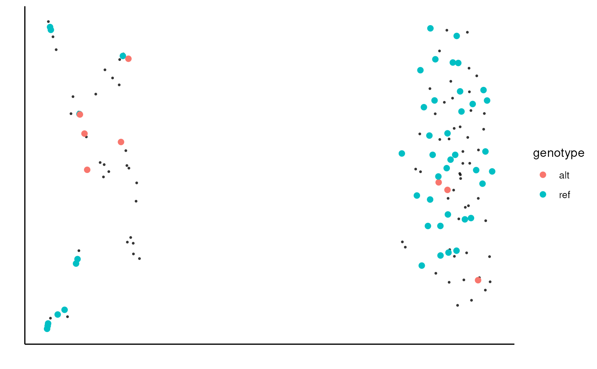

Plot the genotype of single-cell data on a reduced dimension plot (e.g. UMAP).
Usage
sc_plot_genotype(
sce,
genotype_tb,
reduced_dim = "UMAP",
na_cell_col = "grey",
na_cell_size = 0.1,
na_cell_alpha = 0.1,
...
)Arguments
- sce
SingleCellExperiment: the single-cell experiment object with reduced dimensions.
- genotype_tb
tibble: the genotype table, output from
sc_genotype.- reduced_dim
character(1): the name of the reduced dimension to use for plotting.
- na_cell_col
character(1): the color of the cells with no genotype.
- na_cell_size
numeric(1): the size of the cells with no genotype.
- na_cell_alpha
numeric(1): the alpha of the cells with no genotype.
- ...
additional arguments passed to
geom_pointfor cells with genotype.
Examples
ppl <- example_pipeline("SingleCellPipeline") |>
run_FLAMES()
#> Writing configuration parameters to: /tmp/RtmpOvoAc5/file78d668d171dc/config_file_30934.json
#> Warning: You have set to use oarfish quantification without gene quantification. Oarfish currently does not collapse UMIs, and gene quantification performs UMI collapsing. You may want to set do_gene_quantification to TRUE for more accurate results.
#> Configured steps:
#> barcode_demultiplex: TRUE
#> genome_alignment: TRUE
#> gene_quantification: FALSE
#> isoform_identification: TRUE
#> read_realignment: TRUE
#> transcript_quantification: TRUE
#> samtools not found, will use Rsamtools package instead
#> ── Running step: barcode_demultiplex @ Mon Aug 25 02:12:17 2025 ────────────────
#> Using flexiplex for barcode demultiplexing.
#> FLEXIPLEX 0.96.2
#> Setting max barcode edit distance to 2
#> Setting max flanking sequence edit distance to 8
#> Setting read IDs to be replaced
#> Setting number of threads to 8
#> Search pattern:
#> primer: CTACACGACGCTCTTCCGATCT
#> BC: NNNNNNNNNNNNNNNN
#> UMI: NNNNNNNNNNNN
#> polyT: TTTTTTTTT
#> Setting known barcodes from /tmp/RtmpOvoAc5/file78d668d171dc/bc_allow.tsv
#> Number of known barcodes: 143
#> Processing file: /__w/_temp/Library/FLAMES/extdata/fastq/musc_rps24.fastq.gz
#> Searching for barcodes...
#> Number of reads processed: 393
#> Number of reads where at least one barcode was found: 368
#> Number of reads with exactly one barcode match: 364
#> Number of chimera reads: 1
#> All done!
#> Reads Barcodes
#> 10 2
#> 9 2
#> 8 5
#> 7 4
#> 6 3
#> 5 7
#> 4 14
#> 3 14
#> 2 29
#> 1 57
#> ── Running step: genome_alignment @ Mon Aug 25 02:12:17 2025 ───────────────────
#> Creating junction bed file from GFF3 annotation.
#> Aligning sample /tmp/RtmpOvoAc5/file78d668d171dc/matched_reads.fastq.gz -> /tmp/RtmpOvoAc5/file78d668d171dc/align2genome.bam
#> Warning: samtools not found, using Rsamtools instead, this could be slower and might fail for large BAM files.
#> Sorting BAM files by genome coordinates with 8 threads...
#> Indexing bam files
#> ── Running step: isoform_identification @ Mon Aug 25 02:12:17 2025 ─────────────
#> ── Running step: read_realignment @ Mon Aug 25 02:12:18 2025 ───────────────────
#> Checking for fastq file(s) /__w/_temp/Library/FLAMES/extdata/fastq/musc_rps24.fastq.gz
#> files found
#> Checking for fastq file(s) /tmp/RtmpOvoAc5/file78d668d171dc/matched_reads.fastq.gz
#> files found
#> Checking for fastq file(s) /tmp/RtmpOvoAc5/file78d668d171dc/matched_reads_dedup.fastq.gz
#> files not found
#> Warning: Oarfish does not support UMI deduplication, you should deduplicate reads before running Oarfish
#> Realigning sample /tmp/RtmpOvoAc5/file78d668d171dc/matched_reads.fastq.gz -> /tmp/RtmpOvoAc5/file78d668d171dc/realign2transcript.bam
#> Warning: samtools not found, using Rsamtools instead, this could be slower and might fail for large BAM files.
#> Sorting BAM files by 8 with CB threads...
#> ── Running step: transcript_quantification @ Mon Aug 25 02:12:18 2025 ──────────
sce <- experiment(ppl) |>
scuttle::logNormCounts() |>
scater::runPCA() |>
scater::runUMAP()
#> Warning: more singular values/vectors requested than available
#> Warning: You're computing too large a percentage of total singular values, use a standard svd instead.
snps_tb <- sc_mutations(
bam_path = ppl@genome_bam,
seqnames = "chr14",
positions = 2714
)
#> 02:12:23 Got 1 bam file, parallelizing over each position ...
#>
|
| | 0%
|
|======================================================================| 100%
#>
#> 02:12:24 Merging results ...
genotype_tb <- sc_genotype(
snps_tb, ref = "C", alt = "T", seqname = "chr14", pos = 2714,
alt_min_count = 2, alt_min_pct = 0.5, ref_min_count = 1, ref_min_pct = 1
)
sc_plot_genotype(
sce, genotype_tb, na_cell_col = "black",
na_cell_size = 0.5, na_cell_alpha = 0.7,
size = 2
)
